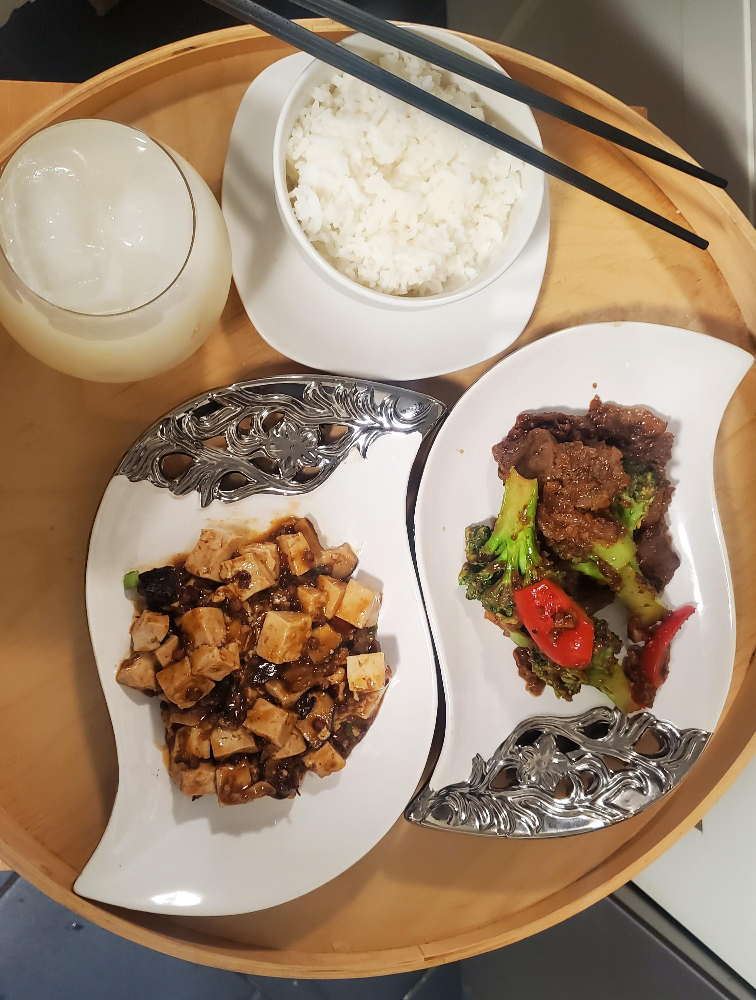
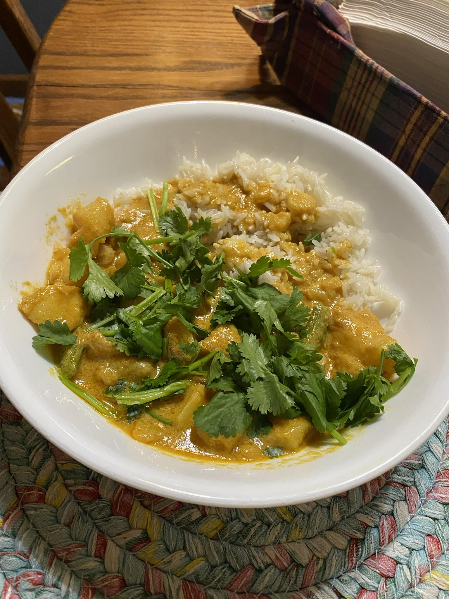
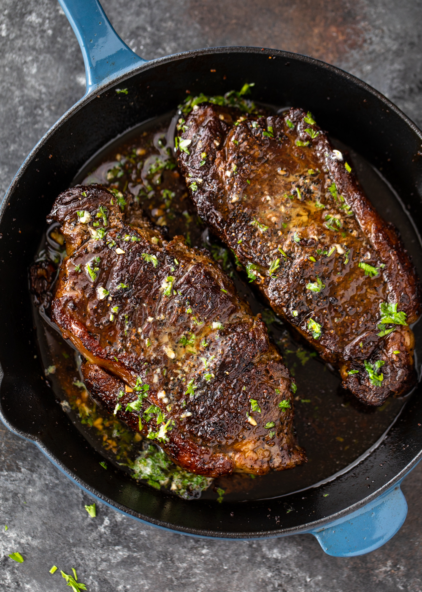
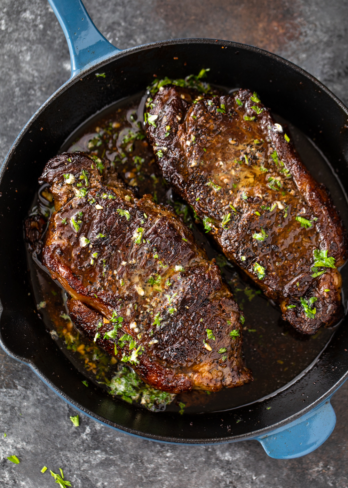

Culinary Chronicles: Showcasing the Best Food in the World
A website by: Evan Holloway & Evie Cutrell & Zach Harris
These are My favorite cuisines!
- Chinese Food
- Mexican Food
- Indian Food
- Asian Food


- Tongue Tacos
- General Tso's Chicken
- Yellow Curry Chicken
- Sushi
- Garlic Steak

 

Learn how to make handmade sushi rolls here!
Click here for the bowl of ramen recipe!
Get the grill ready for this steak recipe!